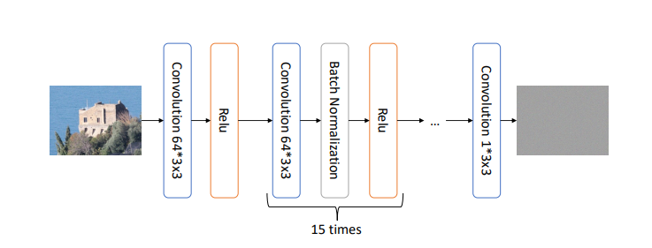

Methods
Steganalysis Features
Noise component is generally used to detect tampering. Using edge filters they generate features on which run a classifer.
Step1. Generate residual of images using edge filters(1st, 2nd and 3rd order)

Step2. Computing Co-occurance matrix in the vertical and horizontal direction
Step3. Utilize the symmetry in features to reduce the dimentionality
Step4. Run an SVM classifier to predict the output(They are using bagging to give fast prediction and better models then using a single large model).
Possible Improvements:
1. Co-occurance matrix is computation intensive and due to the large size of the image it takes a long time to compute
2. We might we able to use the edge filters as the first conv layer for CNNs
Confusion Matrix (Traning)

Accuracy: 0.83
Precision: 0.57
Recall: 0.8769
F1 score: 0.68875
Confusion Matrix (Test)

Accuracy: 0.7094
Precision: 0.0542
Recall: 0.233
F1 score: 0.087072
We can conclude the model ended up overfitting. More training data and larger batch size would definately help.
Noiseprint Features
This approach tries to find the tampered regions by extracting the 'noiseprint'(fingerprint of the camera model used). The tampered region has noise inconsistencies in the tampered region. A CNN based network is used to extract noise from images whose architecture is shown below. The network has been trained in a Siamese fashion due to lack of input output pairs. Instead, a pair of image patches are considered, if they are of the same camera model and from the same position in the image, they have a positive label and otherwise a negative label. This model is trained using images from 125 camera models, with each batch having 50 groups(same model and position within a group) of 4 patches each. This network is used to detect forgeries in an image, as tampered regions will have inconsistencies in noise as shown below.

The network architecture
Example of noise inconsistencies
Other methods
DCT
Using the text from document